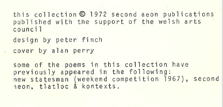

The source material for a found poem can be any piece of writing whatsover.
After the initial act of selection may follow excision, trimming, re-arrangement or even, to a certain extent, re writing. Or it may be simply a question of selection.
So be it.
Malcolm Parr
